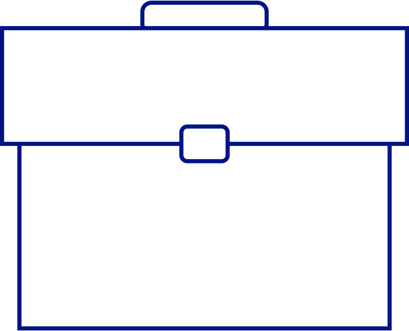
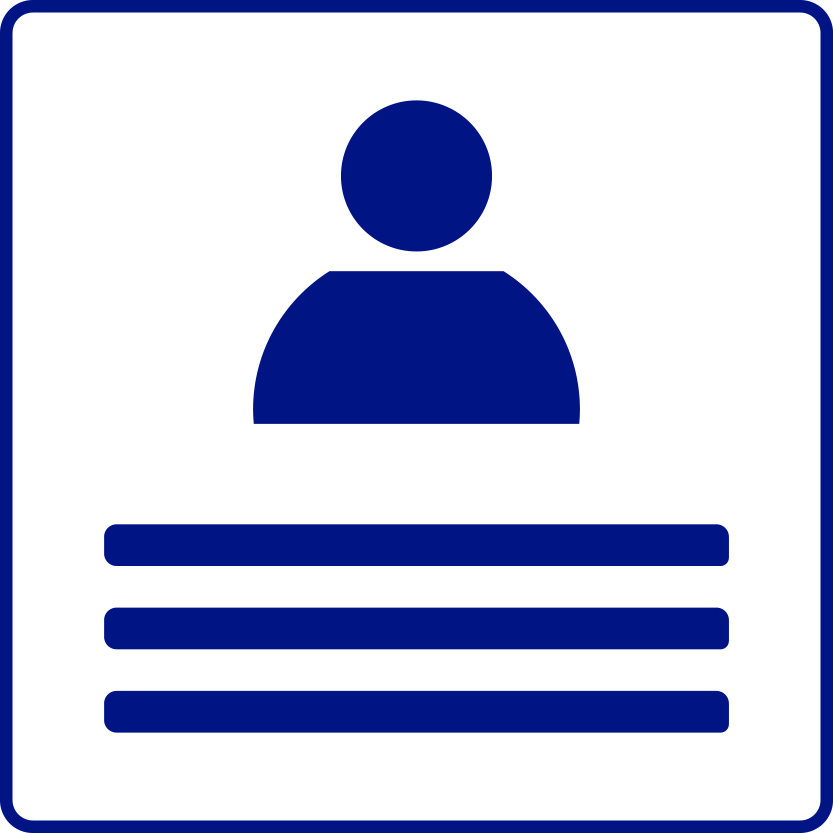
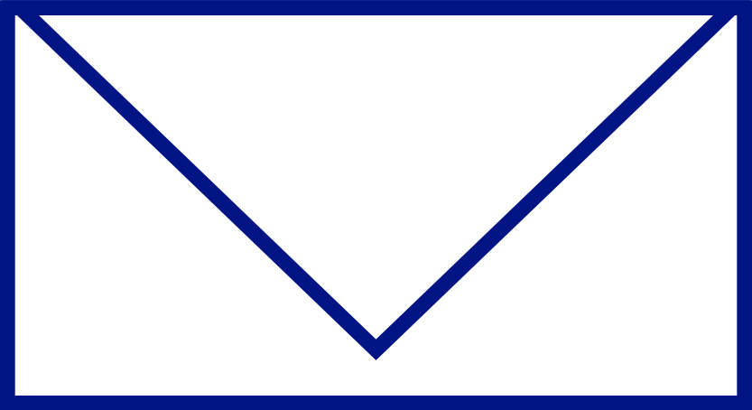

Check It Out!
See some of Riad's past work.
 PortfolioLearn about Riad's experience.
 ResumeWhy wait? Contact Riad today!
 Contact MeBio

Some People Like to compete. I like to Cooperate.
-Riad Nassar
Howdy!
I'm a UX Designer in beautiful Austin, TX and recent ACC graduate. I love helping people out and making the World a better place for everyone.
I have a Bachelor's in Psychology with a minor in Computer Science from Austin College and an Associate's in User Experience Design from Austin Community College. In 2015, I was a NATURAL programming intern at the office of the Texas Comptroller of Public Accounts where I learned how to program a main frame to process taxes and documents. After that I was a Customer Success Representative at Xerox and then Conduent after they split off. There I triaged with the software engineering team, project managers, business analysts and the clients to resolve issues, answer complex questions and help configure the product to our clients needs.
When I'm not busy designing, I judge robotics competitions in Central Texas.